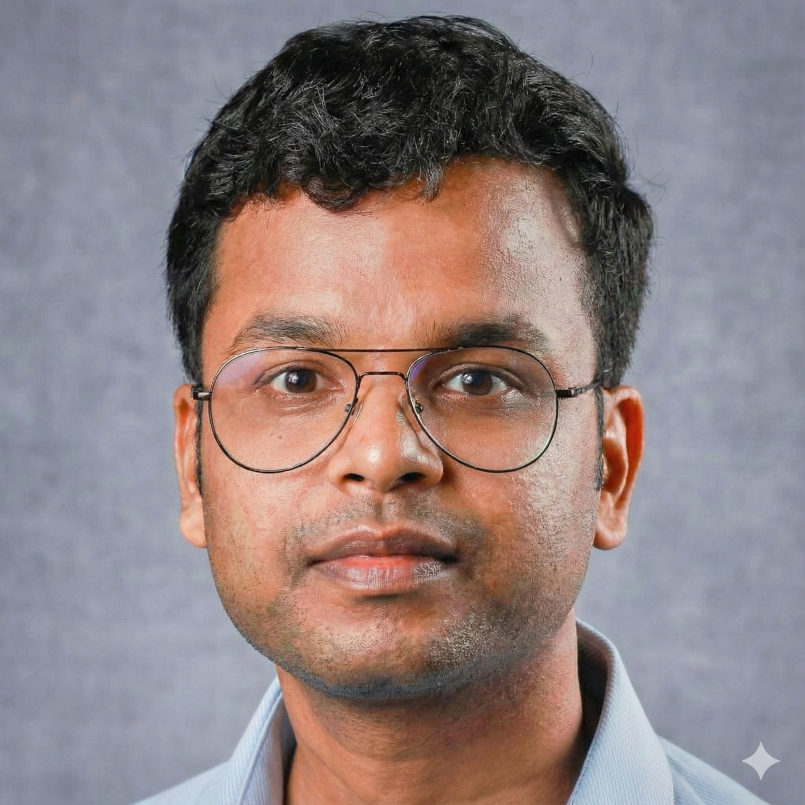

Ph.D., Computational Chemistry
Jan 2022 – May 2026Dept. of Chemistry, IIT Kanpur · Advisor: Prof. Nisanth N. Nair
- Thesis — Kinetics from Sliced Sampling Approaches
My research centres on molecular dynamics and enhanced sampling — using simulation to understand chemical and biological processes at the molecular scale.

I am an Assistant Professor in the Department of Chemistry at ANS College, Nabinagar, and a computational chemist who holds a Ph.D. from IIT Kanpur. My doctoral work developed ways to recover reaction kinetics from enhanced-sampling simulations — in particular, a protocol for computing rate constants of barrier-crossing events from Temperature Accelerated Sliced Sampling (TASS).
My route into computational science ran through applied nuclear engineering. Before my doctorate I served as a Scientific Officer at Tarapur Atomic Power Station, following training at the BARC Training School (IGCAR, Kalpakkam). I continue to work on enhanced sampling, reaction-rate theory, and computational catalysis.
Dept. of Chemistry, IIT Kanpur · Advisor: Prof. Nisanth N. Nair
IISER Kolkata · Advisor: Prof. Ashwani K. Tiwari
IIT Kanpur · Advisor: Prof. Nisanth N. Nair
IISER Kolkata · Advisor: Prof. Ashwani K. Tiwari
University of Hyderabad · Advisor: Prof. Susanta Mahapatra
Dept. of Chemistry, ANS College Nabinagar, Bihar (on study leave Mar 2022 – Feb 2026 to pursue the Ph.D. at IIT Kanpur)
IIT Kanpur
Tarapur Atomic Power Station 3&4, Tarapur
BARC Training School, IGCAR, Kalpakkam